Producerea şi utilizarea curentului continuu |
Legile circuitelor electrice |
B-5. |
Gruparea rezistorilor |
Uneori, elementele de circuit sunt conectate în moduri simple, pe care le poţi analiza cu uşurinţă.
În circuitul din figura 5−1a, cei doi rezistori sunt conectaţi astfel încât la capetele acestora este aplicată aceeaşi tensiune
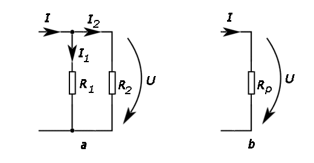
Figura 5-1. a) Doi rezistori conectaţi în paralel. b) Rezistorul echivalent.
Gruparea în paralel a celor doi rezistori este străbătută de un curent cu intensitatea I, atunci când la capetele grupării este aplicata tensiunea U. Aşadar, gruparea este caracterizată de rezistenţa electrică echivalentă:
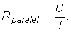
Rezistorul R1 este străbătut de curent cu intensitatea
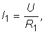
iar rezistorul R2 este străbătut de curent cu intensitatea
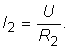
Aplicând prima lege a lui Kirchhoff (legea curenţilor) într−unul dintre cele două noduri ale grupării în paralel, obţii:
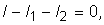
de unde obţii că:
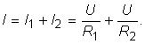
Aşadar, rezistenţa echivalentă a grupării în paralel este:
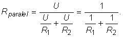
Generalizând pentru oricâţi rezistori grupaţi în paralel:
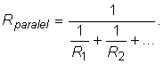
Compară rezistenţa echivalentă a unei grupări în paralel de rezistor cu cea mai mică rezistenţă electrică a rezistorilor din grupare.
Dacă Rm este cea mai mică rezistenţă electrică a rezistorilor din grupare, obţii că:
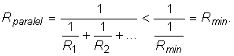
Aşadar,
Investighează gruparea în paralel a rezistorilor. Lucrează în echipă.
Pasul 1. Măsuraţi cu multimetrul rezistenţa electrică a câtorva rezistori. Lipiţi pe fiecare o mică etichetă pe care aţi înscris valoarea măsurată.
Pasul 2. Calculaţi rezistenţa electrică aşteptată pentru gruparea în paralel a acestor rezistori.
Pasul 3. Realizaţi conectarea în paralel a rezistorilor, pe o regletă cu contacte.
Pasul 4. Măsuraţi cu multimetrul rezistenţa electrică a grupării şi comparaţi rezultatul măsurătorii cu valoarea aşteptată.
Gruparea în paralel a rezistorilor constituie un divizor de curent: unul dintre rezistori este străbătut doar de o parte din curentul care străbate gruparea.
Intensitatea maximă a curentului care poate fi măsurat cu un ampermetrul este 1 mA şi are rezistenţa internă 10 Ω.
Imaginează o soluţie prin care ampermetrul să poată măsura curenţi cu intensitatea până la 1 A!
Când se măsoară un curent cu intensitatea 1 A, intensitatea curentului prin ampermetru trebuie sa nu depăşească 1 mA, altfel instrumentul ar fi distrus!
Soluţia o reprezintă divizorul de curent: conectăm în paralel cu ampermetrul un rezistor care să preia ceilalţi 999 mA - numit şunt (figura 5−2).
| 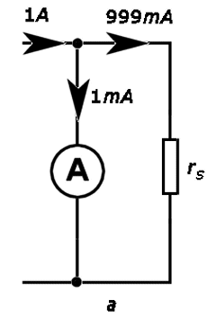 | 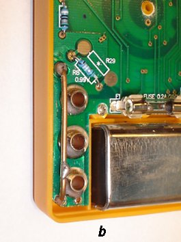 |
| Figura 5-2. Şuntul ampermetrului: a) schema electrică a divizorului de curent; b) şuntul pentru curenţi intenşi dintr−un multimetru. | |
Fiind parcurs de un curent de 999 de ori mai intens decât instrumentul de măsură, rezistenţa electrică a şuntului trebuie să fie de 999 de ori mai mică decât cea a instrumentului, adică 0,010 Ω. O valoare atât de mică poate fi obţinută folosind un fir metalic gros, conectat la bornele ampermetrului (figura 5−2b).
Cât te aştepţi să fie rezistenţa electrică echivalentă a grupării de rezistori din figura 5−3?
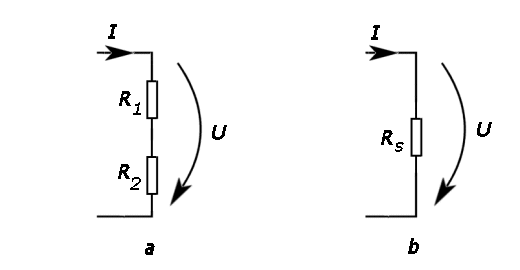
Figura 5-3. a) Doi rezistori conectaţi în serie. b) Rezistorul echivalent.
Daca la capetele grupării în serie din figura 5−3a este aplicată tensiunea U, gruparea este străbătută de curentul cu intensitatea I. Aşadar, gruparea este caracterizată de rezistenţa electrică echivalentă:
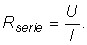
Aplicând a doua lege a lui Kirchhoff (legea tensiunilor), obţii:
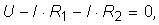
de unde obţii că:
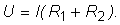
Aşadar, rezistenţa echivalentă a unei grupări în serie a celor doi rezistori este:
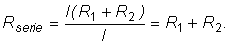
Generalizând pentru oricâţi rezistori grupaţi în serie:
Aşadar,
Investighează gruparea în serie a rezistorilor utilizaţi utilizaţi în activitatea experimentală precedentă. Lucrează în echipă.
Pasul 1. Calculaţi rezistenţa electrică aşteptata pentru gruparea în serie a acestor rezistori.
Pasul 2. Realizati conectarea în serie a rezistorilor, pe o regletă cu contacte.
Pasul 3. Măsuraţi cu multimetrul rezistenţa grupării şi comparaţi rezultatul măsurătorii cu valoarea aşteptată.
Gruparea în serie a rezistorilor constituie un divizor de tensiune: unuia dintre rezistori i se aplică doar o parte din tensiunea aplicată grupării.
Tensiunea maximă ce poate fi aplicată ampermetrului din provocarea 5−2 este 1 mA x 10 Ω=10 mV. Indicaţiile ampermetrului fiind proporţionale cu tensiunea aplicată, acesta poate măsura tensiuni până la 10 mV.
Imaginează o soluţie prin care instrumentul să poată măsura tensiuni până la 10 V.
Când se măsoară o tensiune de 10 V, instrumentului trebuie să i se aplice tensiunea maximă de 10 mV, altfel acesta ar fi distrus!
Soluţia o reprezintă divizorul de tensiune: conectăm în serie cu instrumentul un rezistor care să preia ceilalţi 9990 mV - numit rezistor adiţional (figura 5−4).
| 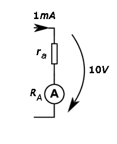 | Figura 5−4. Schema electrică a divizorului de tensiune cu rezistor adiţional. |
Fiindu−i aplicată o tensiune de 999 de ori mai mare decât instrumentului de măsură, rezistenţa electrică a rezistorului adiţional trebuie să fie de 999 de ori mai mare decât cea a instrumentului, adică 9990 Ω.
În unele aplicaţii este necesară modificarea continuă a tensiunii. Pentru aceasta se construiesc divizoare de tensiune cu modificarea continuă a raportului de divizare a tensiunii, numite potenţiometre (figura 5−5).
| 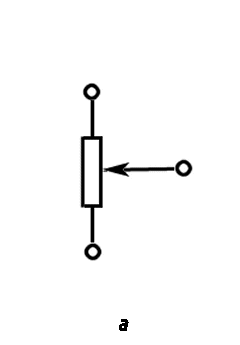 | 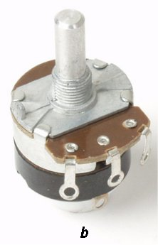 |
| Figura 5-5. Potenţiometru: a) simbol; b) variantă de realizare constructivă. | |
Contactul reprezentat simbolic prin săgeată, numit cursor, este mobil şi poate fi mutat de la un capăt la altul al părţii rezistive. Tensiunea "colectată" între cursor şi unul dintre capetele potenţiometrului depinde astfel de poziţia cursorului.
Partea rezistivă a unui potenţiometru are rezistenţa 10 kΩ. Între capetele potenţiometrului este aplicată tensiunea 10 V (figura 5−6). Când cursorul se află în poziţia C, rezistenţa porţiunii AC este 1 kΩ.
Cât te aştepţi să fie tensiunea colectată între cursor şi capătul al potenţiometrului?
| 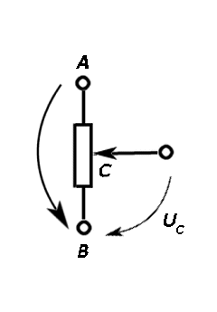 | Figura 5−6. Divizorul potenţiometric. |
Investighează funcţionarea potenţiometrului. Lucrează în echipă.
Pasul 1. Realizaţi, pe o regletă cu contacte, circuitul din figura 5−6. Aplicati între contactele fixe ale potenţiometrului o tensiune de câţiva volţi.
Pasul 2. Rotiţi axul potenţiometrului şi observaţi indicaţiile unui voltmetru conectat între cursor şi unul dintre contactele fixe ale potenţiometrului.